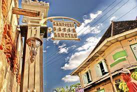

<!DOCTYPE html>
<html lang="en">
  <head>
    <title>Lokasi Wisata Kota Surakarta (LoWis KoSTa)</title>
    <meta http-equiv="X-UA-Compatible" content="IE=edge" />

    <!--Leaflet CSS & JS-->
    <link rel="stylesheet" href="https://unpkg.com/leaflet@1.3.0/dist/leaflet.css" />
    <script src="https://unpkg.com/leaflet@1.3.0/dist/leaflet.js"></script>

    <!--Plugin Search CS & JS-->
    <link rel="stylesheet" href="assets/plugins/leaflet-search/leaflet-search.css" />
    <script src="assets/plugins/leaflet-search/leaflet-search.js"></script>

    <!-- Plugin Geolocation CSS & JS-->
    <link rel="stylesheet" href="https://cdn.jsdelivr.net/npm/leaflet.locatecontrol@v0.76.0/dist/L.Control.Locate.min.css" />
    <script src="https://cdn.jsdelivr.net/npm/leaflet.locatecontrol@v0.76.0/dist/L.Control.Locate.min.js" charset="utf-8"></script>

    <!-- Plugin Mouse Position CSS & JS-->
    <link rel="stylesheet" href="assets/plugins/leaflet-mouseposition/L.Control.MousePosition.css" />
    <script src="assets/plugins/leaflet-mouseposition/L.Control.MousePosition.js"></script>

    <!--Plugin Measurement CSS & JS-->
    <link rel="stylesheet" href="assets/plugins/leaflet-measure/leaflet-measure.css" />
    <script src="assets/plugins/leaflet-measure/leaflet-measure.js"></script>

    <!--Plugin EasyPrint CSS & JS-->
    <link rel="stylesheet" href="assets/plugins/leaflet-easyprint/easyPrint.css" />
    <script src="assets/plugins/leaflet-easyprint/leaflet.easyPrint.js"></script>

    <!--Routing Machine CSS dan JS-->
    <link rel="stylesheet" href="https://unpkg.com/leaflet-routing-machine@latest/dist/leaflet-routing-machine.css" />
    <script src="https://unpkg.com/leaflet-routing-machine@latest/dist/leaflet-routing-machine.js"></script>

    <!--Geocoder CSS dan JS-->
    <link rel="stylesheet" href="https://unpkg.com/leaflet-control-geocoder/dist/Control.Geocoder.css" />
    <script src="https://unpkg.com/leaflet-control-geocoder/dist/Control.Geocoder.js"></script>

    <!--Simbologi Judul-->
    <link rel="preconnect" href="https://fonts.googleapis.com" />
    <link rel="preconnect" href="https://fonts.gstatic.com" crossorigin />
    <link href="https://fonts.googleapis.com/css2?family=Inspiration&display=swap" rel="stylesheet" />
    <link href="https://fonts.googleapis.com/css2?family=Ubuntu&display=swap" rel="stylesheet" />

    <style>
      #map {
        weight
        height: 660px;
      }
      /*Background pada Judul*/
      .info {
        padding: 6px 8px;
        font: 14px/16px Arial, Helvetica, sans-serif;
        background: white;
        background: rgba(255, 255, 255, 0.8);
        box-shadow: 0 0 15px rgba(0, 0, 0, 0.2);
        border-radius: 5px;
        text-align: center;
      }
      .info h1 {
        padding: 1px;
        color: rgb(0, 0, 0);
      }
      h1 {
        font-family: "Inspiration", cursive;
        font-size: 50px;
        font-weight: bold;
      }
      h2 {
        font-family: "Ubuntu", sans-serif;
        font-size: 20px;
      }
    </style>
  </head>

  <script src="data/dataarea.js"></script>

  <body>
    <div id="map"></div>
  </body>

  <script>
    var map = L.map("map").setView([-7.559113237541839, 110.82742021532394], 13);
    L.tileLayer("https://api.mapbox.com/styles/v1/{id}/tiles/{z}/{x}/{y}?access_token=pk.eyJ1IjoibWFwYm94IiwiYSI6ImNpejY4NXVycTA2emYycXBndHRqcmZ3N3gifQ.rJcFIG214AriISLbB6B5aw", {
      attribution: 'Map data &copy; <a href="https://www.openstreetmap.org/copyright">OpenStreetMap</a> contributors, Imagery © <a href="https://www.mapbox.com/">Mapbox</a>',
      id: "mapbox/streets-v11",
    }).addTo(map);

    var sejarahIcon = L.icon({
      iconUrl: "marker/Bangunan_Bersejarah.png",

      iconSize: [40, 45], // Mengatur besar kecil dari icon
    });

    var binatangIcon = L.icon({
      iconUrl: "marker/Kebun_Binatang.png",

      iconSize: [40, 45], // Mengatur besar kecil dari icon
    });

    var museumIcon = L.icon({
      iconUrl: "marker/Museum.png",

      iconSize: [40, 45], // Mengatur besar kecil dari icon
    });

    var pasarIcon = L.icon({
      iconUrl: "marker/Pasar.png",

      iconSize: [40, 45], // Mengatur besar kecil dari icon
    });

    var tamanIcon = L.icon({
      iconUrl: "marker/Taman_Kota.png",

      iconSize: [40, 45], // Mengatur besar kecil dari icon
    });

    var budayaIcon = L.icon({
      iconUrl: "marker/Wista_Budaya.png",

      iconSize: [40, 45], // Mengatur besar kecil dari icon
    });

    //deskripsi mengenai lokasi wisata bangunan bersejarah
    L.marker([-7.567113, 110.822759], { icon: sejarahIcon })
      .addTo(map)
      .bindPopup(
        "<h2>Keraton Mangkunegaran (ꦏꦼꦫꦠꦺꦴꦤ꧀ꦩꦁꦏꦸꦤꦺꦒꦫꦤ꧀)</h2> <p>Keraton Mangkunegaran merupakan salah satu objek wisata sejarah yang ada pada Kota Solo. Pengunjung dapat datang untuk mengetahui sejarah dari keraton ini, kenampakan seni dari keraton, dan kebudayaan yang kental. Terdapat juga beberapa tempat foto yang menarik untuk pengunjung seperti bangunan dengan arsitektur yang menarik, taman yang cantik, ruang-ruang dari keraton, museum, perpustakaan, dan masih banyak lagi.</p> <p>Fasilitas: Edukasi sejarah dan budaya</p> <p>Fasilitas lain: Parkir dan toilet</p> <p>Jam Operasional: Setiap hari (09.00-14.00) sedangkan saat hari libur nasional (libur)</p> <p>HTM: Rp.10.000</p> "
      );
    L.marker([-7.578027, 110.827759], { icon: sejarahIcon })
      .addTo(map)
      .bindPopup(
        "<h2>Keraton Hadiningrat (ꦏꦼꦫꦠꦺꦴꦤ꧀ꦲꦣꦶꦤꦶꦔꦿꦠ꧀)</h2> <p>Keraton Mangkunegaran merupakan salah satu objek wisata sejarah yang ada pada Kota Solo. Pengunjung dapat melihat berbagai macam koleksi barang-barang sejarah. Contoh peninggalan sejarah ini seperti kereta kuda, senapan, keris, dan lain-lain.</p> <p>Fasilitas: Edukasi sejarah dan budaya</p> <p>Fasilitas lain: Parkir dan toilet</p> <p>Jam Operasional: Sabtu-Kamis (09.00-15.00) sedangkan Jumat (Tutup)</p> <p>HTM: Rp.15.000</p> "
      );
    L.marker([-7.56704, 110.809504], { icon: sejarahIcon })
      .addTo(map)
      .bindPopup(
        "<h2>Loji Gandrung (ꦭꦺꦴꦗꦶꦒꦤ꧀ꦝꦿꦸꦁ)</h2> <p>Loji Gandrung merupakan salah satu lokasi bersejarah yang terdapat pada Kota Surakarta. Tempat ini dulunya pernah dijadikan sebagai kantor dinas pemerintahan Kota Surakarta. Konsep dari bangunan Loji Gandrung sendiri memiliki gaya Eropa yang dipadukan dengan Jawa.</p> <p>Fasilitas: Tempat untuk mengetahui sejarah</p> <p>Fasilitas lain: Parkir, mushola, dan toilet</p> <p>Jam Operasional: Senin hingga Jumat (08.00-16.00)sedangkan Sabtu-Minggu (Tutup)</p> <p>HTM: Rp.3.000</p> "
      );
    L.marker([-7.571929, 110.830715], { icon: sejarahIcon })
      .addTo(map)
      .bindPopup(
        "<h2>Benteng Vastenburg (ꦧꦺꦤ꧀ꦠꦺꦁꦮ꦳ꦱ꧀ꦠꦺꦤ꧀ꦧꦸꦂꦒ꧀)</h2> <p>Benteng Vastenburg merupakan salah satu peninggalan sejarah pada masa penjajahan Belanda yang sudah ada sejak tahun 1745. Tembok ini berbentuk bujur sangkar dan disekeliling benteng ini memiliki parit yang digunakan sebagai perlindungan pada jamannya. Untuk masa sekarang, benteng ini digunakan untuk edukasi sejarah dan tempat menyelenggarakan festifal-festifal yang memerlukan area yang luas</p> <p>Fasilitas: Edukasi sejarah</p> <p>Fasilitas lain: Toilet, parkir, mushola, dan kantin</p> <p>Jam Operasional: Setiap hari (24 jam)</p> <p>HTM: Rp.1.000 untuk anak-anak dan Rp.2.000 untuk orang dewasa</p>"
      );

    //deskripsi mengenai lokasi wisata kebuh binatang
    L.marker([-7.563025, 110.860506], { icon: binatangIcon })
      .addTo(map)
      .bindPopup(
        "<h2>Jurug Solo Zoo (ꦗꦸꦫꦸꦒ꧀ꦱꦺꦴꦭꦺꦴꦗ꦳ꦺꦴꦎ)</h2> <p>Taman Satwa Taru Jurug Surakarta merupakan satu-satunya kebun binatang yang ada pada Kota Surakarta. Kebun binatang ini memiliki berbagai macam jenis satwa yang berbeda serta memiliki lingkungan yang sejuk dan nyaman karena ditumbuhi ribuan pohon. Selain dapat melihat berbagai macam satwa yang ada, pengunjung dapat melakukan beberapa aktivitas seperti menunggangi hewan, mencoba permainan yang ada, serta edukasi terhadap anak.</p> <p>Fasilitas: Wahana satwa (Gajah tunggang, unta tunggang, Kuda tunggang, Interaksi satwa feeding satwa, dan foto satwa), wahana permainan(Kereta kelinci, Bummper Car, Kolam Keceh, Marry Ground, Komedi putar, istana balon, dan pemancingan), dan edukasi flora dan fauna</p> <p>Fasilitas lain: parkir, mushola, toilet, kios makanan, dan tempat cuci tangan</p> <p>Jam Operasional: Setiap hari (08.00-16.00)</p> <p>HTM: Rp.25.000</p> "
      );

    //deskripsi mengenai lokasi wisata museum
    L.marker([-7.568755759839046, 110.81439199994132], { icon: museumIcon })
      .addTo(map)
      .bindPopup(
        "<h2>Museum Radya Pustaka (ꦩꦸꦱꦺꦪꦸꦩ꧀ꦫꦣꦾꦥꦸꦱ꧀ꦠꦏ)</h2> <p>Museum Radya Pustaka merupakan museum yang berisikan berbagai macam koleksi peninggalan sejarah pada zaman Belanda. Museum ini didirikan oleh Kanjeng Raden Adipati Sosrodiningrat IV pada masa pemerintahan Pakubuwono IX di dalem Kepatihan pada tanggal 28 Oktober 1890. Beberapa contoh koleksi peninggalan sejarah yang terletak pada museum ini adalah wayang kulit, pusaka, patung, gamelan, topeng, buku-buku kuno, dan masih banyak lagi. Museum ini memiliki tata letak yang cukup berbeda apabila dibandingkan dengan museum lain karena dahulu museum ini digunakan sebagai hunian oleh Johannes Busselaar, seorang warga negara Belanda.</p> <p>Fasilitas: Tempat untuk mengetahui peninggalan sejarah</p> <p>Fasilitas lain: Parkir, mushola, toilet, dan wastafel</p> <p>Jam Operasional: Selasa, Rabu, Kamis, Sabtu, dan Minggu (09.00-15.00), Jumat (09.00-11.00) sedangkan Senin (Tutup)</p> <p>HTM: Rp.5.000</p> "
      );
    L.marker([-7.569052470707934, 110.81079707116584], { icon: museumIcon })
      .addTo(map)
      .bindPopup(
        "<h2>Museum Keris Nusantara (ꦩꦸꦱꦺꦪꦸꦩ꧀ꦏꦼꦫꦶꦱ꧀ꦤꦸꦱꦤ꧀ꦠꦫ)</h2> <p>Museum Keris Nusantara merupakan museum yang khusus berisikan keris. Museum yang dibuka pada tahun 2017 ini memiliki lebih dari 400 jenis keris yang berbeda dengan usia yang beragam. Selain keris, terdapat pusaka bersejarah lain yang terdapat pada museum ini. Bangunan dari museum ini memiliki 4 lantai dengan fungsi yang berbeda pada setiap lantainya.</p> <p>Pada lantai pertama, pengunjung dapat mengisi daftar tamu serta terdapat papan informasi yang berisi informasi mengenai persebaran senjata di dunia. Pada lantai kedua, terdapat beberapa keris yang dipajang dengan informasi yang lengkap. Pada lantai ketiga, pengunjung dapat mengetahui proses pembuatan keris pada zaman Candi Borobudur dan Sukuh. Pada lantai keempat, terdapat ruang penyimpanan artefak keris.</p> <p>Fasilitas: Tempat untuk mengetahui peninggalan sejarah yang berupa pusaka</p> <p>Fasilitas lain: Parkir, mushola, dan toilet</p><p>Jam Operasional: Selasa, Rabu, Kamis, Sabtu, dan Minggu (09.00-15.00), Jumat (09.00-11.00) sedangkan Senin (Tutup)</p> <p>HTM: Rp.3.000</p> "
      );
    L.marker([-7.557774288993779, 110.79555005753362], { icon: museumIcon })
      .addTo(map)
      .bindPopup(
        "<h2>Museum Lokananta (ꦩꦸꦱꦺꦪꦸꦩ꧀ꦭꦺꦴꦏꦤꦤ꧀ꦠ)</h2> <p>Museum Lokananta merupakan studio rekaman musik yang berhubungan dengan sejarah insdustri musik Indonesia. Museum yang sudah berdiri sejak tahun 1956 ini didirikan oleh Susuhan Pakubuwono IX. Museum ini mempunyai alat rekaman lama dengan jenis yang berbeda-beda hingga piringan hitam dari musisi legendaris yang sering diperdengarkan pada Radio Republik Indonesia (RRI). Merkipun seluruh alat pada museum ini merupakan benda lama, namun peralatan ini masih dapat digunakan sesuai dengan fungsinya secara baik. Selesai mengunjungi museum ini, pengunjung dapat menukarkan tiket masuk museum dengan souvenir yang menjadi khas dari Museum Lokananta.</p> <p>Fasilitas: Tempat untuk mengetahui sejarah yang berupa telekomunikasi</p> <p>Fasilitas lain: Parkir, mushola, toilet, dan wastafel</p> <p>Jam Operasional: Senin hingga Jumat (09.00-15.00) sedangkan Sabtu-Minggu (Tutup)</p> <p>HTM: Rp.20.000</p> "
      );
    L.marker([-7.570585, 110.816495], { icon: museumIcon })
      .addTo(map)
      .bindPopup(
        "<h2>Tumurun Private Museum (ꦠꦸꦩꦸꦫꦸꦤ꧀ꦥꦿꦶꦮ꦳ꦠꦺꦩꦸꦱꦺꦪꦸꦩ꧀)</h2> <p>Tumurun Private Museum merupakan museum yang berisikan berbagai macam kerajinan karya-karya yang sangat cocok dijadikan untuk tempat berfoto. Terdapat lebih dari 150 karya seni yang berbeda-beda seperti mobil antik, lukisan, patung, dan lain-lain. Karya-kerya seni ini berasal dari seniman-seniman kontemporer seperti Hey Dono, Eddy Susanto, Walter Spies, Raden Saleh, dan lain-lain</p> <p>Fasilitas: Tempat untuk berfoto</p> <p>Fasilitas lain: Parkir, mushola, dan toilet</p> <p>Jam Operasional: Senin (Tutup) sedangkan Selasa hingga Minggu (12.00-16.00)</p> <p>HTM: Gratis</p> "
      );

    //deskripsi mengenai lokasi wisata pasar
    L.marker([-7.575377, 110.826745], { icon: pasarIcon })
      .addTo(map)
      .bindPopup(
        "<h2>Pasar Klewer (ꦥꦱꦂꦏ꧀ꦭꦼꦮꦼꦂ)</h2> <p>Pasar Klewer merupakan salah satu pasar yang menjadi pusat kain di Kota Surakarta. Wisatawan yang datang dapat melakukan transaksi jual beli seperrti baju batik, kebaya, daster, sarimbit, dan masih banyak lagi. Tidak hanya menjual kain, pasar ini juga menjual berbagai macam aksesoris seperti gelang, kalung, blangon, serta jilbab. Pasar ini juga menjual jajanan pasar yang menjadi ciri khas bagi Kota Solo</p> <p>Fasilitas: Wisata belanja dan kuliner khas Solo</p> <p>Fasilitas lain: Parkir, mushola, toilet, dan wastafel</p> <p>Jam Operasional: Setiap hari (07.00-17.00)</p> <p>HTM: Gratis</p> "
      );
    L.marker([-7.569177, 110.822538], { icon: pasarIcon })
      .addTo(map)
      .bindPopup(
        "<h2>Pasar Triwindu (ꦥꦱꦂꦠꦿꦶꦮꦶꦤ꧀ꦝꦸ)</h2> <p>Pasar Triwindu merupakan pasar yang menjual berbagai macam barang-barang antik dan kuno. Beberapa barang yang dijual seperti uang kuno, piring klasik, perkakas vintage, patung keramik,pusaka kuno, permainan tradisional, dan masih banyak lagi. Barang-barang yang dijual di pasar ini biasanya juga dicari oleh kolektor dari dalam dan luar negeri. Ketika melakukan transaksi jual beli, barang-barang yang akan dibeli harus diteliti terlebih dahulu karena tidak semua pedagang ingin mengakui apakah barang yang dijual asli atau palsu.</p> <p>Fasilitas: Tempat berbelanja barang-barang antik</p> <p>Fasilitas lain: Parkir, mushola, toilet, dan tempat makan</p> <p>Jam Operasional: Setiap hari (09.00-16.00)</p> <p>HTM: Gratis</p> "
      );
    L.marker([-7.569301, 110.831402], { icon: pasarIcon })
      .addTo(map)
      .bindPopup(
        "<h2>Pasar Gede (ꦥꦱꦂꦒꦼꦣꦺ)</h2> <p>Pasar gede merupakan salah satu pasar tradisional tertua yang ada pada Kota Solo. Pasar ini menjual berbagai macam kebutuhan bahan pangan sehari-hari. Tidak hanya menjual kebutuhan sehari-hari, pasar ini juga menjadi tempat untuk wisata kuliner khas Solo. Salah satu kuliner terkenal yang ada pada pasar ini adalah es dawet telasih. Ketika hari raya imlek, wilayah sekitar pasar ini dihiasi dengan ribuan lampion yang indah dan biasanya menjadi daya tarik tersendiri bagi kebanyakan orang.</p> <p>Fasilitas: Tempat belanja dan kuliner</p> <p>Fasilitas lain: Parkir, mushola, dan toilet</p> <p>Jam Operasional: Rabu (Tutup) sedangkan Kamis hingga Minggu (08.00-17.00)</p> <p>HTM: Gratis</p> "
      );
    L.marker([-7.56875, 110.822299], { icon: pasarIcon })
      .addTo(map)
      .bindPopup(
        "<h2>Pasar Malam Ngarsopuro (ꦥꦱꦂꦩꦭꦩ꧀ꦔꦂꦱꦺꦴꦥꦸꦫꦺꦴ)</h2> <p>Pasar malam Ngarsopuro merupakan pasar yang buka pada malam hari dan berdekatan dengan Pasar Triwindu. Pasar ini berisikan kumpulan pelaku UMKM yang menjual barang dagangannya. Pembeli dapat melakukan transaksi jual beli dengan cara menawar harga yang ada. Beberapa aktivitas yang dapat dilakukan pembeli adalah berbelanja pakaian atau mencoba kuliner khas Kota Solo</p> <p>Fasilitas: Tempat belanja dan kuliner</p> <p>Fasilitas lain: Parkir, toilet, dan masjid</p> <p>Jam Operasional: Minggu sampai Jumat (Tutup) sedangkan Sabtu (19.00-22.00)</p> <p>HTM: Gratis</p> "
      );

    //deskripsi mengenai lokasi wisata taman kota
    L.marker([-7.553064, 110.807968], { icon: tamanIcon })
      .addTo(map)
      .bindPopup(
        "<h2>Taman Balekambang (ꦠꦩꦤ꧀ꦧꦭꦺꦏꦩ꧀ꦧꦁ)</h2> <p>Taman Balekambang merupakan sebuah ruang terbuka hijau yang terdapat pada kota Surakata dan ada sejak 1921. Taman ini merupakan peninggalan dari K.G.P.A.A. Mangkunagara VII. Taman ini memiliki luas sebesar 9,8 hektar dan konsep dari taman ini mengintegrasikan antara konsep Jawa dan Eropa.</p> <p>Fasilitas: Penangkaran hewan serta tanaman langka, panggung seni budaya, outbond, konservasi sejarah, dan wahana kendaraan darat serta laut</p> <p>Fasilitas lain: Toilet, parkir, mushola, hotspot</p> <p>Jam Operasional: Setiap hari (07.00-17.00)</p> <p>HTM: Gratis</p>"
      );
    L.marker([-7.568566, 110.81299], { icon: tamanIcon })
      .addTo(map)
      .bindPopup(
        "<h2>Taman Sriwedari (꧋ꦠꦩꦤ꧀ꦱꦿꦶꦮꦺꦣꦫꦶ)</h2> <p>Taman Sriwedari merupakan daerah kompleks taman yang berisikan berbagai macam nilai sejarah serta kebudayaan dari Kota Surakarta. Taman ini didirikan oleh Raja dari Kasunanan Surakarta, yaitu Sinuhun Pakubuwono X.</p> <p>Fasilitas: Gedung Wayang Orang (menonton kesenian wayang orang seperti Mahabarata dan Ramayana), Museum Radya Pustaka, wahana bermain, dan kios souvenir</p> <p>Fasilitas lain: Toilet, parkir, dan mushola</p> <p>Jam Operasional: Setiap hari (24 jam)</p> <p>HTM: Rp.7.000/orang</p> "
      );
    L.marker([-7.582195, 110.826419], { icon: tamanIcon })
      .addTo(map)
      .bindPopup(
        "<h2>Alun-alun Kidul Surakarta (ꦄꦭꦸꦤ꧀ꦄꦭꦸꦤ꧀ꦏꦶꦢꦸꦭ꧀ꦱꦸꦫꦏꦂꦠ)</h2> <p>Alun-alun Kidul Surakarta merupakan salah satu bagian dari kompleks Keraton Kasunanan Surakarta Hadiningrat. Alun-alun ini didirikan oleh Susuhunan Pakubuwana (PB) II pada tahun 1744. Seluruh bangunan yang terdapat pada alun-alun ini memiliki arti yang dalam. Terdapat juga orang-orang yang berjualan makanan pada waktu-waktu tertentu. Tidak hanya sebagai tempat wisata dan kuliner, namun alun-alun ini juga dapat berguna sebagai tempat edukasi budaya Kota Surakarta.</p> <p>Fasilitas: Pariwisata, tempat kuliner, dan edukasi budaya</p> <p>Fasilitas lain: Parkir dan mushola</p> <p>Jam Operasional: Setiap hari (24 jam)</p> <p>HTM: Gratis</p> "
      );

    //deskripsi mengenai lokasi wisata budaya
    L.marker([-7.570569, 110.79766], { icon: budayaIcon })
      .addTo(map)
      .bindPopup(
        "<h2>Kampung Batik Laweyan (ꦏꦩ꧀ꦥꦸꦁꦧꦠꦶꦏ꧀ꦭꦮꦺꦪꦤ꧀)</h2> <p>Kampung Batik Laweyan merupakan kawasan yang terkenal akan batik yang dihasilkan. Pengunjung dapat melihat proses mulai dari batik awal hingga akhir pembuatan batik. Pengunjung juga dapat belajar membuat batik, membuat batiknya sendiri, dan membawa hasil dari batik tersebut. Tidak hanya melihat proses dan membuat batik, pengunjung juga dapat berbelanja pada lokasi ini.</p> <p>Fasilitas: Tempat untuk mengenal dan berbelanja batik</p> <p>Fasilitas lain: Parkir, mushola, dan toilet</p> <p>Jam Operasional: Setiap hari (08.00-20.00)</p> <p>HTM: Gratis</p> "
      );
    L.marker([-7.573038, 110.825317], { icon: budayaIcon })
      .addTo(map)
      .bindPopup(
        "<h2>Kampung Batik Kauman (ꦏꦩ꧀ꦥꦸꦁꦧꦠꦶꦏ꧀ꦏꦻꦴꦩꦤ꧀)</h2> <p>Kampung Batik Kauman merupakan kawasan yang terkenal akan batik yang dihasilkan. Pengunjung dapat melihat proses mulai dari batik awal hingga akhir pembuatan batik. Pengunjung juga dapat belajar membuat batik, membuat batiknya sendiri, dan membawa hasil dari batik tersebut. Tidak hanya melihat proses dan membuat batik, pengunjung juga dapat berbelanja pada lokasi ini.</p> <p>Fasilitas: Tempat untuk mengenal dan berbelanja batik</p> <p>Fasilitas lain: Parkir, mushola, dan toilet</p> <p>Jam Operasional: Senin-Jumat (09.00-18.00) sedangkan Sabtu-Minggu (08.00-18.00)</p> <p>HTM: Gratis</p> "
      );

    //Plugin Search
    var markersLayer = new L.LayerGroup();
    map.addLayer(markersLayer);

    //Plugin Geolocation
    L.control.locate().addTo(map);

    //Plugin Mouse Position
    L.control.mousePosition({ position: "bottomleft", separator: ",", prefix: "Koordinat : " }).addTo(map);

    //Plugin Measurement
    var measureControl = new L.Control.Measure({
      primaryLengthUnit: "meters",
      secondaryLengthUnit: "kilometers",
      primaryAreaUnit: "hectares",
      secondaryAreaUnit: "sqmeters",
      activeColor: "#FF0000",
      completedColor: "#00FF00",
    });
    measureControl.addTo(map);

    //Mengatur routing
    L.Routing.control({
      routeWhileDragging: true,
      reverseWaypoints: true,
      autoRoute: true,
      geocoder: L.Control.Geocoder.nominatim(),
    }).addTo(map);

    //Mencari lokasi
    L.Control.geocoder().addTo(map);

    //Visualisasi data area beserta pop-up
    var geojson = L.geoJson(dataarea, {
      onEachFeature: function (feature, layer) {
        var popupText = "Kecamatan: " + feature.properties.WADMKC;

        if (feature.properties.NAMOBJ) {
          popupText += "<br/>Kelurahan: " + feature.properties.NAMOBJ;
        }
        layer.bindPopup(popupText);
      },
    });
    markersLayer.addLayer(geojson);

    //Scale Bar
    L.control
      .scale({
        maxWidth: 150,
        position: "bottomright",
      })
      .addTo(map);

    //Image Legend
    L.Control.Legend = L.Control.extend({
      onAdd: function (map) {
        var img = L.DomUtil.create("img");
        img.src = "assets/img/legend/legenda.png";
        img.style.width = "300px";
        return img;
      },
    });
    L.control.Legend = function (opts) {
      return new L.Control.Legend(opts);
    };
    L.control.Legend({ position: "bottomleft" }).addTo(map);

    //Image Watermark
    L.Control.Watermark = L.Control.extend({
      onAdd: function (map) {
        var img = L.DomUtil.create("img");
        img.src = "assets/img/logo/logo.png";
        img.style.width = "300px";
        return img;
      },
    });

    L.control.watermark = function (opts) {
      return new L.Control.Watermark(opts);
    };

    L.control.watermark({ position: "bottomleft" }).addTo(map);
  </script>
</html>
